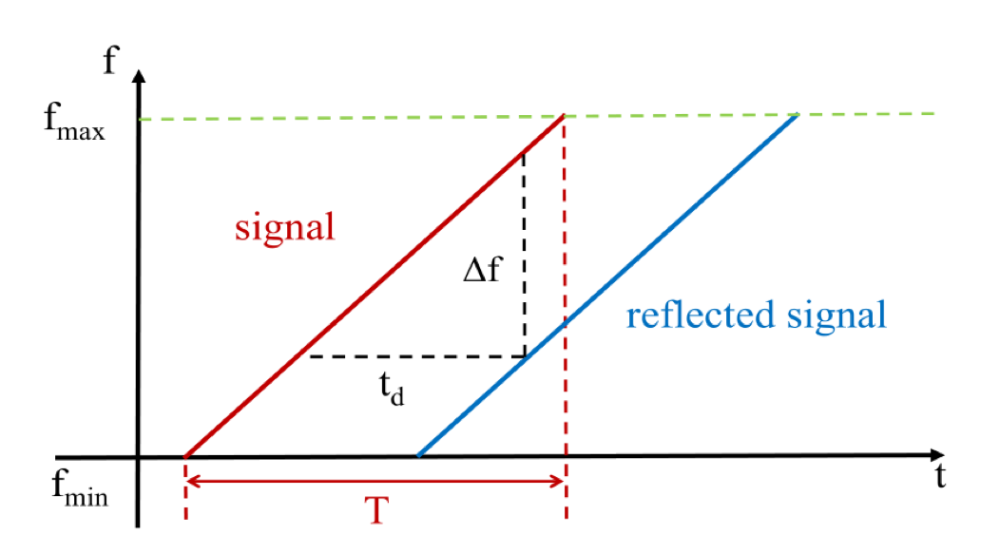

FMCW
FMCW技术和脉冲雷达技术是两种在高精度雷达测距中使用的技术。 FMCW基本原理为发射波为高频连续波，其频率成周期性变化，在每一个周期内，频率随时间线性递增（从fmin到fmax）或递减（从fmax到fmin）。 可以利用FMCW（Frequency Modulated Continuous Wave，调频连续波）信号进行TOF的测量。

图. FMCW信号
如图所示，FMCW是一种专门调制的chirp信号，其信号频率周期性地从f_{min}逐渐增加到f_{max}。一个频率变换周期为T的FMCW信号R(t)可以表示为：
R(t) = \cos(2\pi(f_{min} + \frac{B}{2T}t)t)
式中B=f_{max}– f_{min}表示频率变化的带宽。由于反射回来信号和原始信号的频率差值\Delta f，和信号的传输时间\Delta t有线性变化关系，因此可以利用FMCW将对TOF的测量转换为对信号频率变化的测量。 假设接收端和发送端之间的距离为d，因为传输时间\Delta t是往返的总时间，那么可以得到： $$ d = \frac{c\times \Delta t}2 $$
同时，根据图中的三角函数关系，可以得到：
\Delta t = \frac{\Delta f\times T}{B}
结合上面的两个式子，可以计算出距离d为：
d = \frac{\Delta f\times c\times T}{2B}
因此，最终可以利用接收信号和发送信号的频率差值实现测距。
2. 在声音上的实现¶
2.1 实验场景¶
一个手机A发送时长约7s的声音信号，另一个手机B做远离手机A的直线运动并录下声音存储为fmcw_receive.wav。
发送声音信号的格式为88个chirp信号，每两个chirp信号之间有与chirp信号等长的空白间隔。 chirp频率自18kHz线性增加到20.5kHz，持续时间40ms。 采样率为48kHz。
由于我们的收发机之间没有同步，因此通过FMCW得到的不是绝对距离。 但通过计算出的“绝对距离”，我们可以得到手机B相对于A的距离变化。
2.2 测距代码¶
1 2 3 4 5 6 7 8 9 10 11 12 13 14 15 16 17 18 19 20 21 22 23 24 25 26 27 28 29 30 31 32 33 34 35 36 37 38 39 40 41 42 43 44 45 46 47 48 49 50 51 52 53 54 55 56 57 58 | %% 发送信号生成 fs = 48000; T = 0.04; f0 = 18000; % start freq f1 = 20500; % end freq t = 0:1/fs:T; data = chirp(t, f0, T, f1, 'linear'); output = []; for i = 1:88 output = [output, data, zeros(1,1921)]; end %% 接收信号读取，并滤波 [mydata,fs] = audioread('fmcw_receive.wav'); mydata = mydata(:,1); hd = design(fdesign.bandpass('N,F3dB1,F3dB2',6,17000,23000,fs),'butter'); mydata = filter(hd,mydata); figure; plot(mydata); %% 生成pseudo-transmitted信号 pseudo_T = []; for i = 1:88 pseudo_T = [pseudo_T,data,zeros(1,T*fs+1)]; end % fmcw信号的起始位置在start处 % 若start有偏差会造成什么影响？ start = 38750; pseudo_T = [zeros(1,start),pseudo_T]; [n,~] = size(mydata); [~,m] = size(pseudo_T); pseudo_T = [pseudo_T,zeros(1,n-m)]; s = pseudo_T.*mydata'; len = (T*fs+1)*2; % chirp信号及其后空白的长度之和 fftlen = 1024*64; %做快速傅里叶变换时补零的长度。在数据后补零可以使的采样点增多，频率分辨率提高。可以自行尝试不同的补零长度对于计算结果的影响。 %% 计算每个chirp信号所对应的频率偏移 idxs = zeros(88, 1); for i = start:len:start+len*87 FFT_out = abs(fft(s(i:i+len/2),fftlen)); [~, idx] = max(abs(FFT_out(1:round(fftlen/2)))); idxs(round((i-start)/len)+1) = idx; end %% 依据频偏公式计算出距离 start_idx = 0; delta_distance = (idxs-start_idx)*fs/fftlen*340*T/(f1-f0); %% 画出距离的变化 figure; plot((0:87)*2*T, delta_distance); xlabel('time (s)', 'FontSize', 18); ylabel('distance (m)', 'FontSize', 18); |